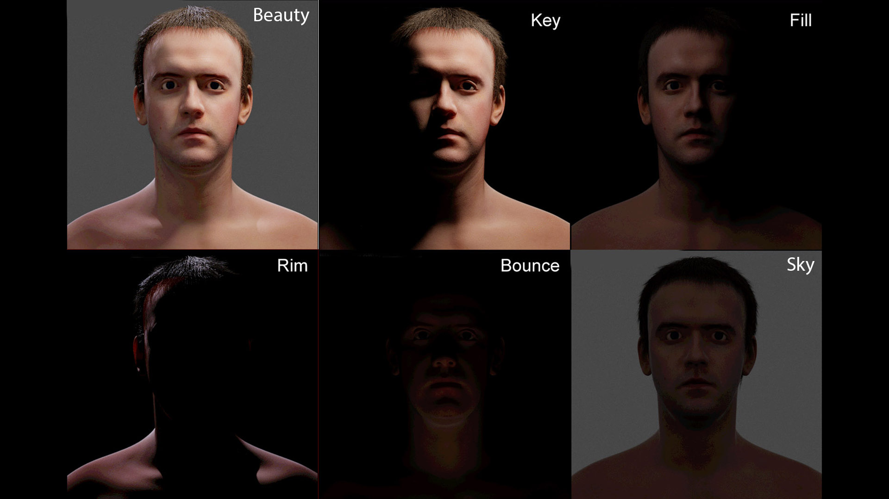
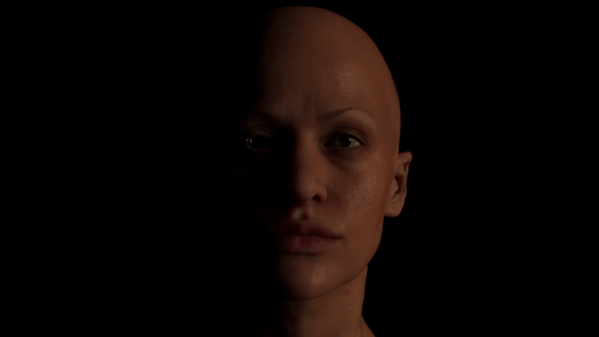
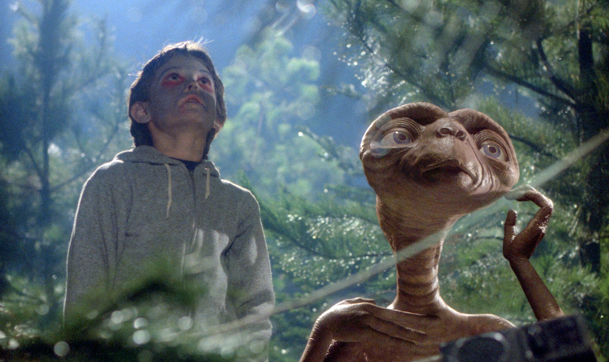
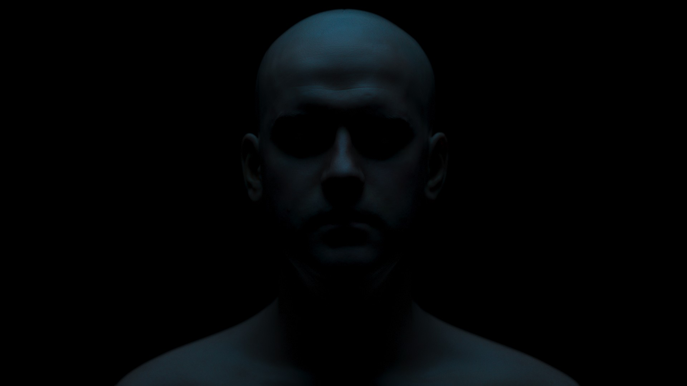
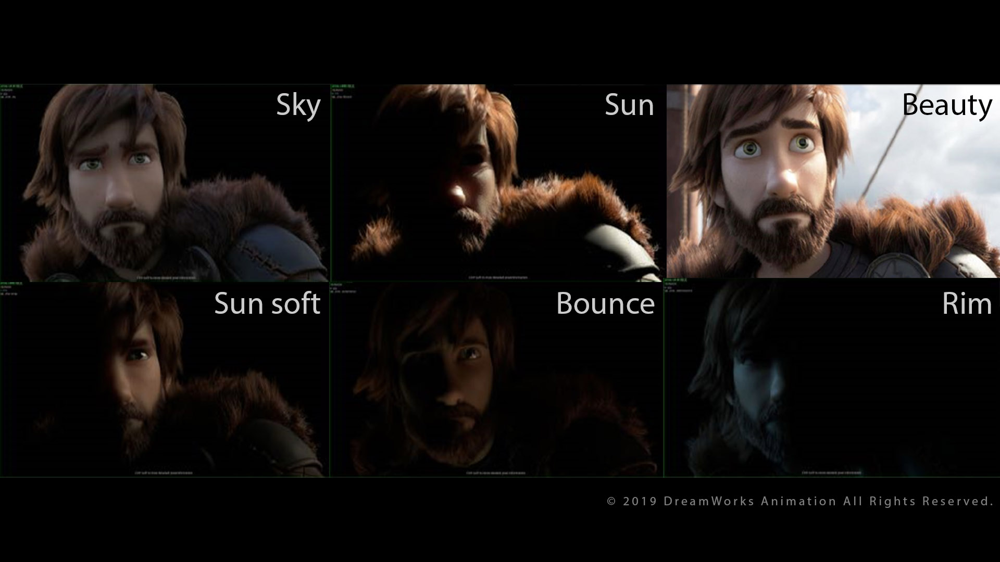

핵심 라이팅 기법
키 라이트 고급 테크닉
주요 광원으로 캐릭터의 형태를 정의하고 주요 특징을 드러내는 핵심 조명 기술
Rembrandt Lighting: 얼굴 한쪽에 삼각형 형태의 빛 패턴 형성
Split Lighting: 얼굴의 절반만 조명하여 극적인 효과 강화
필 라이트 디테일
키 라이트가 만든 그림자 영역을 부드럽게 채워 디테일 복원 및 대비 조절
비율 조절: 키:필 비율(2:1~8:1)로 분위기 미세 조정
컬러 필: 보색 사용으로 시각적 깊이감과 분위기 강화
림 라이트 & 엣지 라이트
캐릭터 윤곽을 따라 빛을 비춰 배경과 분리하고 실루엣을 강조하는 기법
Kicker Light: 45° 후면에서 얼굴 윤곽 강조
Hair Light: 머리카락 질감과 볼륨감 강조
깊이감 & DoF 상호작용
피사계 심도(Depth of Field)와 조명의 상호작용으로 입체감과 공간감 강화
거리별 빛 감쇠 설정으로 깊이감 강화
볼륨 라이팅으로 피사계 심도 시각화
3-Point Lighting의 현대적 응용
Chris Brejon의 CG Cinematography 기법을 활용한 3점 조명의 진화된 활용법
키-필-림의 비대칭 배치로 자연스러운 연출
복합적 광원으로 사실적 빛 산란 구현
영화급 캐릭터 분리 기법
픽사와 디즈니 애니메이션에서 사용되는 고급 실루엣 및 분리 기법
Negative Fill: 특정 영역의 빛을 차단해 명암 대비 강화
컬러 콘트라스트: 캐릭터와 배경의 색상 대비 극대화
Maya & Arnold Light Linking
특정 오브젝트에만 선택적으로 라이트를 적용하거나 제외하는 고급 제어 기법
Light Linking Editor를 통한 빛-오브젝트 관계 설정
Light Groups로 렌더링 후 조명 밸런스 조정
영화 & 실습 예시





실습 단계별 가이드
1
Maya 3-Point Lighting 기본 셋업 (키:필:백 = 4:1:2 비율)
2
Arnold Area Light 사용으로 소프트 섀도우 구현
3
Light Linking Editor에서 캐릭터 파츠별 분리 조명
4
Maya 고블린(Gobos) 활용한 텍스처드 섀도우
5
Arnold aiVolume으로 대기 산란 효과 구현
6
DoF 설정과 연계한 조명 거리 최적화
7
Arnold AOV 패스 분리 (Diffuse/Specular/SSS)
8
Arnold Light Groups로 렌더 후 밸런스 조정
9
캐릭터 실루엣 강화를 위한 림 라이트 미세 조정
10
Composite 레이어별 조명 밸런스 최종 조정